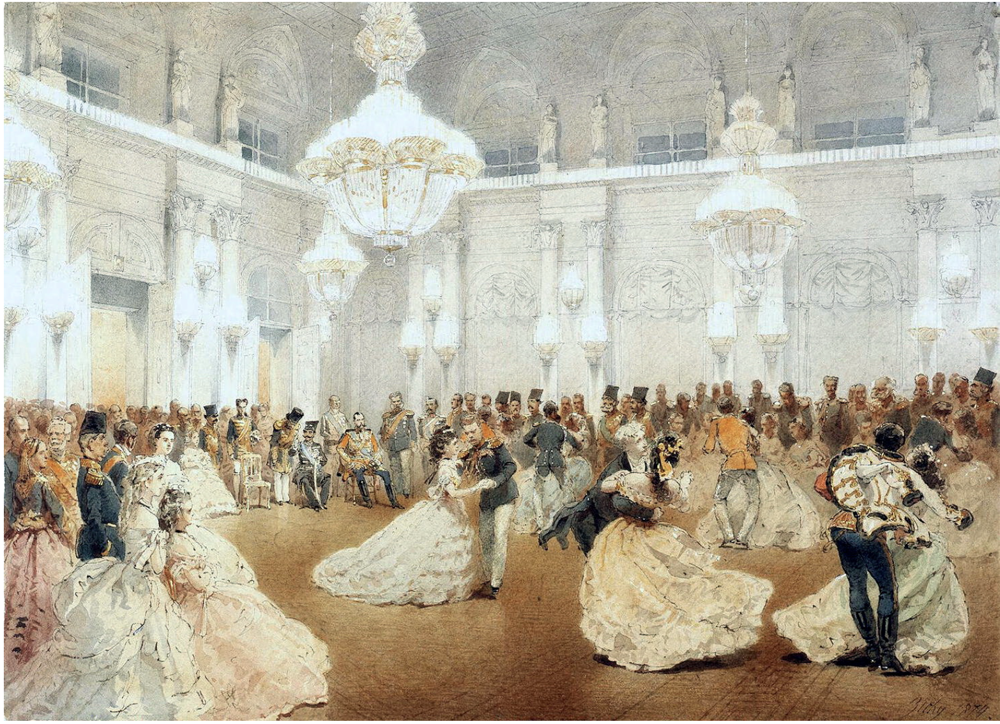

Dancing

[Tolstoy uses the motif of dancing during balls that occur in the novel. The traditional Russian 19th-century ball contained multiple dances, each with a unique socio-psychological function. First is the Polonaise, a processional walk that established the social hierarchy. Next came the Waltz, consisting of many spins and physical closeness of the couple, allowing for intimacy and a private space for the two people. Then was the group dance of the Quadrille, which allowed for networking and polite conversation between multiple couples. The Mazurka was very fast and allowed for improvisation, and was therefore a test of the couple’s synchronization. It was also the time during the ball when the social mask may slip. Lastly came the cotillion, a playful dance that released any tensions and allowed for a final, unguarded interaction before the night ended. In all, these five dances composed the traditional Russian ball, each one playing an important role in the societal interactions.
The ball Tolstoy describes in the most detail in Anna Karenina is in Part 1, when Vronsky and Anna’s mutual feelings for each other become apparent to the reader and especially Kitty. The scene begins with Kitty and her mother entering during the first waltz, and she has already promised the first quadrille to Vronsky. Kitty’s first dance is a waltz with the top dancer, Yegorushka Korsunsky, demonstrating both her high position in society and her skill as a dancer for someone of Korsunsky’s expertise to choose her as a partner. When Korsunsky brings Kitty to Anna, he asks Anna for a waltz, again showing Anna’s high societal position and dancing skill, which she accepts only upon Vronsky’s approach. Now that Kitty and Vronsky are alone, she expects him to invite her to the waltz, which initially he fails to do but quickly recovers and they dance several waltzes together. However, this initial misstep demonstrates that Vronsky is trying to avoid intimacy with Kitty, while physical closeness with him is on the forefront of Kitty’s mind. She attempts to demonstrate this with a look full of love, which Vronsky does not reciprocate, a moment that greatly wounds her. However, the ball continues and Vronsky and Kitty dance the first quadrille together, where they have a superficial conversation during a time that should allow for more intimate conversation. These two dances between the couple firmly establish that they are on completely different pages in regards to how their relationship stands. Kitty is still hoping that Vronsky will ask her to dance the mazurka, and assumes during this dance he will reveal his intentions since it is that setting that confessions are known to be made. While dancing the final waltz with another youth, Kitty encounters Vronsky and Anna dancing together and is struck by the admiration on each of their faces. Their body language and faces reveal the intimacy that is brought about by a waltz but which Kitty did not achieve with Vronsky. Furthermore, Vronsky asks Anna to dance the mazurka, leaving Kitty to dance again with Korsunsky. These moments as Kitty watches Vronsky and Anna dance together fill her with despair, as she realizes the gravity of Vronsky choosing Anna over her and the feelings that are growing between the two. Overall, the sequence of events demonstrates where the relationships stand between Vronsky, Anna, and Kitty: it is apparent that Kitty has been slighted and Vronsky will never return the love she has for him, while Vronsky and Anna are enamored with each other and are not attempting to hide it through this public display.
Tolstoy and Flaubert both use the ball in a similar function in their respective novels, Anna Karenina and Madame Bovary. In both novels, the ball is a pivotal moment that sets the fate of both affairs. For Emma in Madame Bovary, it is at a ball that she “experience[s] the fatal taste for luxury, aristocracy, and sensuality” (Meyer 246). Similarly, Anna exudes passion during the ball, and this interaction with Vronsky forever alters her life. Then, the fateful dance for both women is the waltz: Emma’s sensual dance with the Viscount leaves her “dizzy and panting” (Meyer 246) while Anna’s waltz with Vronsky clearly displays their attraction to each other. Both authors use the social conventions of a ball to introduce the beginnings of the love affairs that will eventually ruin each protagonist.

Works Cited
- Meyer, P. "Anna Karenina: Tolstoy's Polemic with Madame Bovary." The Russian Review, vol. 54, no. 2, 1995, pp. 243–259. https://doi-org.amherst.idm.oclc.org/10.2307/130917.
- Tolstoy, Leo. Anna Karenina. Translated by Rosamund Bartlett, Oxford University Press, 2014.